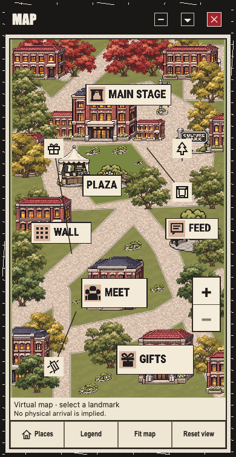

Actual Map BEFORE baseline
New target: all ten backgrounds visibly cuter than BOTH collage and current UI through warm/playful/cozy backdrops and ornaments only. All character art/rendering/UV/anchors/crop/framing/sizing and controls/text/typography/layout are frozen. No new AFTER supplied.
Candidate6ca52f8851473090479f1c13a33e879b6cd099d0. Byte-preserved saved images only, not newly browser-rendered. Concrete guidance, guard context and corrected provenance · Exact source/image/report pins
Same-source BEFORE images; distinct viewport aspects


Preserved exact human collage
The new attachment is byte-identical to this earlier image. NEWhuman instruction changes its meaning: backgrounds must be cuter than this image as well. It remains historical foreground/function context, not an exact dark/grunge palette target.

Background-only guidance
- Use actual6ca52f88 Map390 as BEFORE; warm/playful/cozy backdrop and ornaments must look visibly cuter than both the preserved collage and this current UI.
- Keep actual controls/text/typography/layout and character/atlas/rendering/anchors/crop/framing/sizing unchanged. Existing olive aspect-fit bands may receive assigned backdrop treatment, not geometry/fit/viewport changes.
- Preserve44px/focus/contrast/virtual-caption semantics and all unavailable/access/disabled guards; no fake activity/mural/providers/media/arrival.
- Do not require black cemetery or marching silhouettes to match the old collage. Shared decorative changes remain213scope; avoid decorative left accent lines/rails.
- Consume owner-supplied actual390 Map+World BEFORE/AFTER first and relevant affectedwidth evidence later in21d singlequeue; record exact new source/time/viewport/hash and art/geometry invariants. No self-source pixeloracle/51count acceptance.
Four saved route frames and native report show correct real destinations with truthful unavailable/access/disabled guards and Back focus. No live content or editor inference. Artist231 retains scene-art diagnosis. Old49/new51/later213/currentmaster remain separate cohorts. Whole QA06 remains unfinished.